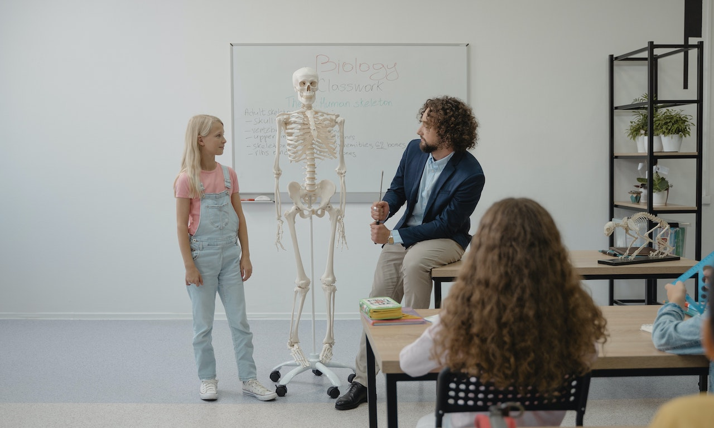

Quelle est la date de la rentrée scolaire 2022 ?
Voici le calendrier scolaire 2021-2022 / 2022-2023 communiqué officiellement par le ministère de l’éducation, afin de prévoir en toute sérénité son retour de vacances, et les prochaines vacances à venir.
La date de la rentrée scolaire 2022 est le jeudi 1er septembre 2022. Le jour de la rentrée scolaire 2022-2023 est le même pour toutes zones (zone A, B et C). La première période durera 7 semaines et demi. Les prochaines vacances (vacances de la Toussaint) commenceront le samedi 22 octobre pour les élèves de toute la France.
Rentrée scolaire au primaire
La date de la rentrée scolaire 2022 des écoles primaires est fixée au jeudi 1er septembre 2022.
Dès le mois de septembre, les élèves des écoles élémentaires feront 30 minutes d'activité physique par jour. Les formes que ces activités prendront sont laissées à l'appréciation des établissements et de leurs structures disponibles : corde à sauter, relais, jeux de ballons...
Cette mesure a pour but de lutter contre la sédentarité et l'obésité des enfants et des adolescents. Déjà expérimentée depuis septembre 2020 par 7 000 écoles, elle s'inscrit dans le cadre d'objectifs lancés par le gouvernement à l'approche des Jeux olympiques et paralympiques de Paris en 2024.
Si votre enfant rentre au CP, L'école primaire annonce un grand changement pour votre enfant : c'est désormais un grand. Et cela doit se répercuter dans son quotidien. Pour bien lui montrer l'importance de cet événement, vous pouvez par exemple décider de réaménager sa chambre, de manière à ce qu'il puisse choisir ses vêtements seul le matin... Dans les jours qui précèdent son entrée à l'école primaire, assurez-vous que votre enfant dorme suffisamment afin qu'il soit en pleine forme le jour J.
Rentrée scolaire au Collège
La date de la rentrée scolaire 2022 des collèges est fixée au jeudi 1er septembre 2022. Votre enfant va faire sa rentrée au collège ? Reprise des cours, découverte du collège, organisation du travail et premières questions d'orientation… L'APIS accompagne collégiens et parents durant ces 4 années qui mènent au brevet et au lycée !
Au collège de l'Estey, la nouvelle année scolaire débutera le jeudi matin pour les élèves rentrant en 6e.
Les élèves de 5e, 4e et 3e ne sont attendus qu'à partir de 13h afin de permettre à l'accueil de leurs cadets dans leur nouveau cadre de vie.